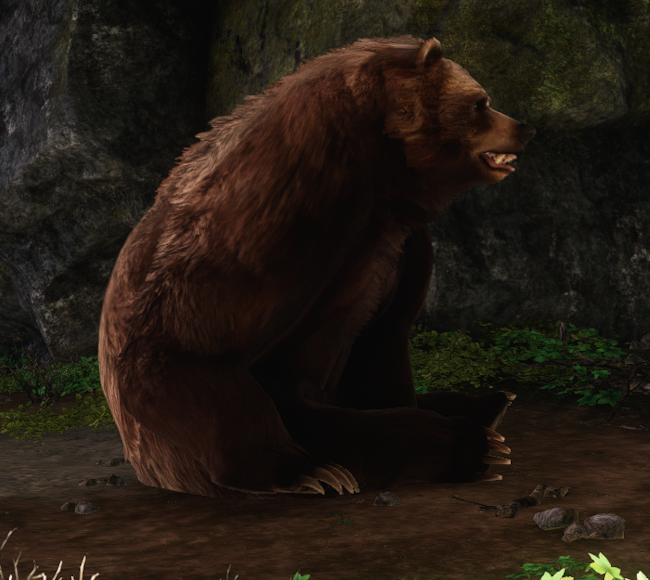
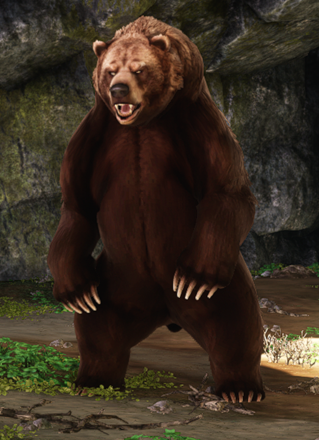

Este foi um dos animais que tive maior dificuldade para fotografar,ficando atrás apenas dos crocodilos.
Geralmente vivem em regiões montanhosas e isoladas. Sua carne é usada apenas em receitas exóticas, não sendo muito consumida no dia a dia.
Também procuram as montanhas por serem locais que contem muitas colmeias.